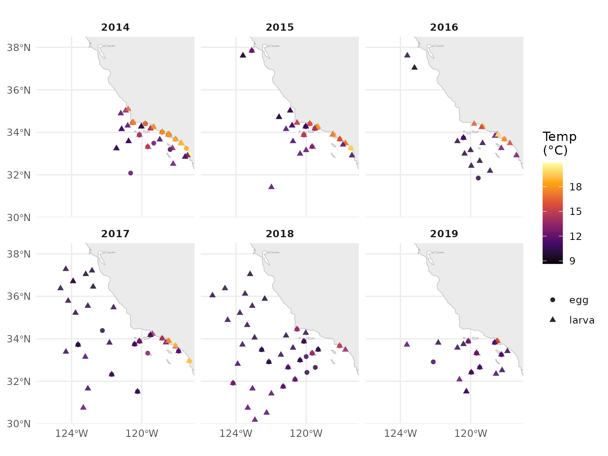
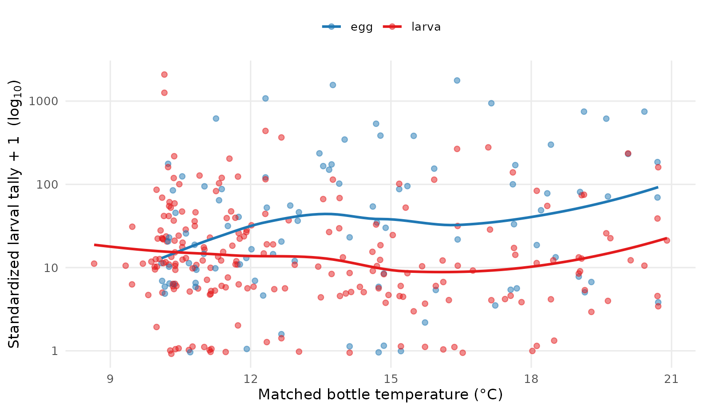
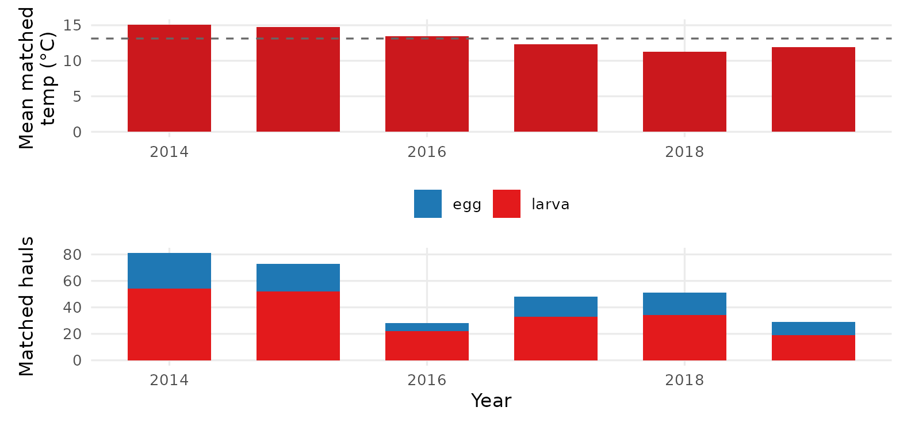

vignettes/bio-env-matching.Rmd
bio-env-matching.RmdCalCOFI has been sampling the California Current since 1949 — three quarters of a century of co-located biological (net-tow ichthyoplankton + zooplankton biomass) and environmental (CTD-bottle) observations. Until recently, using that record for cross-domain analysis meant picking your friction: a Postgres server with credentials, an API account, or downloading 22 GB of CSV and joining it yourself.
It doesn’t anymore. Every CalCOFI release is now published as versioned, public Apache Parquet on Google Cloud Storage — and DuckDB can query it directly over HTTPS. No credentials. No server. No full download. DuckDB reads only the columns and row groups your query actually touches, and it runs the same engine on:
| Where | How |
|---|---|
| R, on your laptop | this vignette |
| Python, on a notebook server | import duckdb; con.sql(open('q.sql').read()).df() |
| shell, on the command line | duckdb < q.sql |
| a web browser, no install | CalCOFI Query — left-side accordion of point-and-click forms (the three bio↔︎env wrappers + custom SQL + a free-form SQL shell + simple browse / spatial / temporal / per-dataset queries), all running DuckDB-WASM client-side. Or shell.duckdb.org for free-form SQL without CalCOFI context. |
Below we ask one cross-domain question — how did Pacific sardine
larvae experience the 2014–2016 marine heatwave? — answer it with a
single calcofi4r call, then unpack what makes that call
reproducible by anyone in any of those
environments.
cc_match_ichthyo_by_name() joins ichthyoplankton tows to
CTD-bottle measurements on the fly: a temporal interval join (within
max_time_hr) plus a spatial ST_Distance_Sphere
filter (within max_dist_km), one row per biological
observation with the matched environmental value averaged over the
window. Relaxed matching widens the windows to 5 km / 72
hr.
library(calcofi4r)
library(dplyr)
d <- cc_match_ichthyo_by_name(
scientific_name = "Sardinops sagax",
env_var = "temperature",
date_min = "2014-01-01",
date_max = "2019-12-31",
relax_matching = TRUE,
version = "v2026.05.14") # pin for archival reproducibility
dim(d)
#> [1] 310 19
d |>
select(scientific_name, life_stage, bio_datetime,
bio_lon, bio_lat, bio_value,
env_value, env_depth_m, n_env,
dist_km, time_diff_hr) |>
head(6)
#> # A tibble: 6 × 11
#> scientific_name life_stage bio_datetime bio_lon bio_lat bio_value
#> <chr> <chr> <dttm> <dbl> <dbl> <dbl>
#> 1 Sardinops sagax larva 2019-02-12 21:54:00 -119. 33.8 112.
#> 2 Sardinops sagax larva 2015-02-05 07:04:00 -124. 37.6 88.2
#> 3 Sardinops sagax larva 2017-04-07 12:48:00 -123. 31.7 5.02
#> 4 Sardinops sagax egg 2014-04-08 06:38:00 -118. 33.9 0.6
#> 5 Sardinops sagax egg 2016-07-22 09:37:00 -119. 34.3 292.
#> 6 Sardinops sagax larva 2014-07-13 23:09:00 -120. 33.3 7.38
#> # ℹ 5 more variables: env_value <dbl>, env_depth_m <dbl>, n_env <dbl>,
#> # dist_km <dbl>, time_diff_hr <dbl>Each row is one net-haul observation of a sardine egg or larva,
joined to the nearest co-located CTD cast that measured temperature. The
bio_* columns describe the biology (bio_value
is the standardized larval tally, bio_datetime /
bio_lon / bio_lat is where + when), the
env_* columns describe the matched temperature
(env_value is the mean of n_env bottle
measurements within the match window, env_depth_m is the
mean sampling depth), and dist_km /
time_diff_hr are the realized offsets — all well inside the
5 km / 72 hr relaxed window.
library(ggplot2)
library(sf)
# California Current coastline from Natural Earth (already a Suggest for the pkg)
coast <- rnaturalearth::ne_countries(
scale = "medium", returnclass = "sf",
country = c("United States of America", "Mexico"))
d_yr <- d |>
mutate(year = lubridate::year(bio_datetime)) |>
sf::st_as_sf(coords = c("bio_lon", "bio_lat"), crs = 4326, remove = FALSE)
ggplot() +
geom_sf(data = coast, fill = "gray92", colour = "gray70", linewidth = 0.2) +
geom_sf(data = d_yr,
aes(colour = env_value, shape = life_stage),
size = 1.6, alpha = 0.85) +
scale_colour_viridis_c(
option = "inferno", direction = 1, name = "Temp\n(°C)") +
scale_shape_manual(values = c(egg = 16, larva = 17), name = NULL) +
scale_x_continuous(breaks = c(-124, -120)) +
coord_sf(xlim = c(-126, -117), ylim = c(30, 38.5), expand = FALSE) +
facet_wrap(~ year, ncol = 3) +
labs(x = NULL, y = NULL) +
theme_minimal(base_size = 11) +
theme(panel.grid.minor = element_blank(),
legend.position = "right",
strip.text = element_text(face = "bold"))
Pacific sardine egg + larva observations across 2014–2019 (Q1–Q4), one point per net haul, coloured by the matched CTD-bottle temperature. 2014–2016 was the Northeast Pacific marine heatwave (the Blob) and a strong El Niño — the warmer reds dominate those panels.
ggplot(d, aes(env_value, bio_value + 1, colour = life_stage)) +
geom_jitter(alpha = 0.5, width = 0.0, height = 0.05, size = 1.6) +
geom_smooth(method = "loess", se = FALSE, linewidth = 0.9) +
scale_y_log10() +
scale_colour_manual(values = c(egg = "#1f78b4", larva = "#e31a1c"),
name = NULL) +
labs(x = "Matched bottle temperature (°C)",
y = expression(paste("Standardized larval tally + 1 ",
"(", log[10], ")"))) +
theme_minimal(base_size = 11) +
theme(panel.grid.minor = element_blank(),
legend.position = "top")
Standardized larval tally (log-scaled) versus matched bottle temperature. A LOESS smoother by life stage suggests the heaviest hauls fall in the cooler 11–14 °C band — typical sardine spawning conditions — with relatively few observations in the warmest waters of the heatwave.
yearly <- d |>
mutate(year = lubridate::year(bio_datetime)) |>
group_by(year) |>
summarise(
n_obs = n(),
n_egg = sum(life_stage == "egg"),
n_larva = sum(life_stage == "larva"),
mean_temp_C = round(mean(env_value), 2),
range_temp_C = sprintf("%.1f – %.1f",
min(env_value), max(env_value)),
median_tally = round(median(bio_value), 1),
.groups = "drop")
knitr::kable(yearly,
caption = "Annual summary of matched sardine ichthyoplankton + temperature.")| year | n_obs | n_egg | n_larva | mean_temp_C | range_temp_C | median_tally |
|---|---|---|---|---|---|---|
| 2014 | 81 | 27 | 54 | 15.09 | 10.3 – 20.7 | 8.1 |
| 2015 | 73 | 21 | 52 | 14.72 | 10.0 – 20.9 | 10.6 |
| 2016 | 28 | 6 | 22 | 13.42 | 8.7 – 20.4 | 10.6 |
| 2017 | 48 | 15 | 33 | 12.32 | 9.3 – 19.1 | 12.9 |
| 2018 | 51 | 17 | 34 | 11.29 | 9.5 – 14.9 | 26.2 |
| 2019 | 29 | 10 | 19 | 11.94 | 10.0 – 17.8 | 17.8 |
library(patchwork)
p1 <- ggplot(yearly, aes(year, mean_temp_C)) +
geom_col(fill = "#cb181d", width = 0.65) +
geom_hline(yintercept = mean(yearly$mean_temp_C),
linetype = "dashed", colour = "gray40") +
labs(x = NULL, y = "Mean matched\ntemp (°C)") +
theme_minimal(base_size = 11) +
theme(panel.grid.minor = element_blank())
p2 <- yearly |>
tidyr::pivot_longer(c(n_egg, n_larva),
names_to = "life_stage", values_to = "n") |>
mutate(life_stage = sub("n_", "", life_stage)) |>
ggplot(aes(year, n, fill = life_stage)) +
geom_col(position = "stack", width = 0.65) +
scale_fill_manual(values = c(egg = "#1f78b4", larva = "#e31a1c"),
name = NULL) +
labs(x = "Year", y = "Matched hauls") +
theme_minimal(base_size = 11) +
theme(panel.grid.minor = element_blank(),
legend.position = "top")
p1 / p2
Annual mean matched temperature (top) and number of matched hauls (bottom). 2014–2016 sits above the multi-year mean — the marine heatwave + 2015–16 El Niño — and sardine hauls drop sharply through and after that period.
cc_match_* keeps it portable
Every helper attaches the exact, fully-interpolated SQL that produced the result, plus query metadata, as attributes on the returned data. That is the package’s reproducibility contract:
meta <- attr(d, "query_meta")
str(meta)
#> List of 6
#> $ package_version: chr "1.3.0"
#> $ release_version: chr "v2026.05.14"
#> $ params :List of 3
#> ..$ max_dist_km: num 5
#> ..$ max_time_hr: num 72
#> ..$ join_method: chr "nearest_time"
#> $ source_urls : chr [1:8] "https://storage.googleapis.com/calcofi-db/ducklake/releases/v2026.05.14/parquet/bottle_measurement.parquet" "https://storage.googleapis.com/calcofi-db/ducklake/releases/v2026.05.14/parquet/bottle.parquet" "https://storage.googleapis.com/calcofi-db/ducklake/releases/v2026.05.14/parquet/casts.parquet" "https://storage.googleapis.com/calcofi-db/ducklake/releases/v2026.05.14/parquet/ichthyo.parquet" ...
#> $ generated_at : chr "2026-06-05 17:07:11 UTC"
#> $ n_rows : int 310meta$release_version pins which release the result came
from (v2026.05.14 here). meta$source_urls is the full list
of public GCS parquet files the query reads. And
attr(d, "sql") is the literal query — no dplyr
translation, no hidden state, ~90 lines of plain DuckDB SQL:
cat(substr(sql, 1, 600), "\n…\n")
#> WITH bio AS (
#> SELECT
#> i.ichthyo_uuid::VARCHAR AS bio_id,
#> t.time_start AS bio_datetime,
#> s.longitude AS bio_lon,
#> s.latitude AS bio_lat,
#> n.std_haul_factor * i.tally / nullif(n.prop_sorted, 0) AS bio_value,
#> sp.scientific_name,
#> sp.common_name,
#> sp.worms_id,
#> i.life_stage,
#> i.tally
#> FROM read_parquet('https://storage.googleapis.com/calcofi-db/ducklake/releases/v2026.05.14/parquet/ichthyo.parquet') i
#> JOIN read_parquet('https://storage.googleapis.com/calcofi-db/ducklake/releases/v2026.05.14/parquet/species.parquet') sp ON i.species_id = sp.species_id
#>
#> …To get the SQL without running it — e.g. to share, save into
version control, or hand to a colleague who works in Python — pass
return_sql = TRUE:
sql <- cc_match_ichthyo_by_name("Sardinops sagax", return_sql = TRUE)
writeLines(sql, "sardine_match.sql")This is the same artifact the CalCOFI Integrated App ships in
its data-download bundle’s query/ folder — re-run it
anywhere, get identical rows.
Because the query is plain SQL against public Parquet, the same string runs in any DuckDB client:
Python
import duckdb
con = duckdb.connect()
con.sql("INSTALL httpfs; LOAD httpfs; INSTALL spatial; LOAD spatial;")
df = con.sql(open("sardine_match.sql").read()).df()DuckDB CLI
A web browser, no install — open CalCOFI Query,
pick a tab (by name / by taxon / zoo biomass / custom / SQL shell), fill
the form, hit Run. The page loads DuckDB-WASM in
a worker thread, runs the exact same generated SQL (it imports
a JavaScript port of calcofi4r/R/match.R), and renders the
rows — all client-side. For arbitrary ad-hoc SQL with no UI at all, shell.duckdb.org is DuckDB’s
official WASM shell. Try either on a phone if you like.
If your analysis is going into a paper, pin the release:
d <- cc_match_ichthyo_by_name(
"Sardinops sagax", env_var = "temperature",
date_min = "2014-01-01", date_max = "2019-12-31",
relax_matching = TRUE,
version = "v2026.05.14")Every URL inside attr(d, "sql") then carries
v2026.05.14, so the query references immutable
Parquet — a colleague re-running it in 10 years gets the same
rows, even after dozens of new releases have shipped. The release
version, the GCS URLs, the windows, and the join method are all in
attr(d, "query_meta"); ship that beside your figures and
your analysis is self-describing.
cc_match_ichthyo_by_name()
The wrappers cover the most common cases:
cc_match_ichthyo_by_name() — filter
biology by scientific name (this vignette).cc_match_ichthyo_by_taxon() — filter
by a WoRMS worms_id and every descendant, resolved
by a recursive walk of the taxon tree on GCS. Replaces the old API’s
ITIS-path-regex pattern.cc_match_zooplankton_biomass() — match
net-tow displacement-volume biomass (net.totalplankton /
net.smallplankton) to bottle measurements.When you need a biological or environmental side the wrappers don’t
cover (a custom filter, an extra join, a different grouping), call the
core engine
cc_match_bio_env(bio, env, ...) directly
with your own SELECT subqueries — see
?cc_match_bio_env for the column contract.
For the broader picture — what tables ship in a release, how to query the hive-partitioned CTD profiles, and the relationship to the Integrated App download bundle — see the Data Access and Matching Helpers chapters of the CalCOFI documentation book.